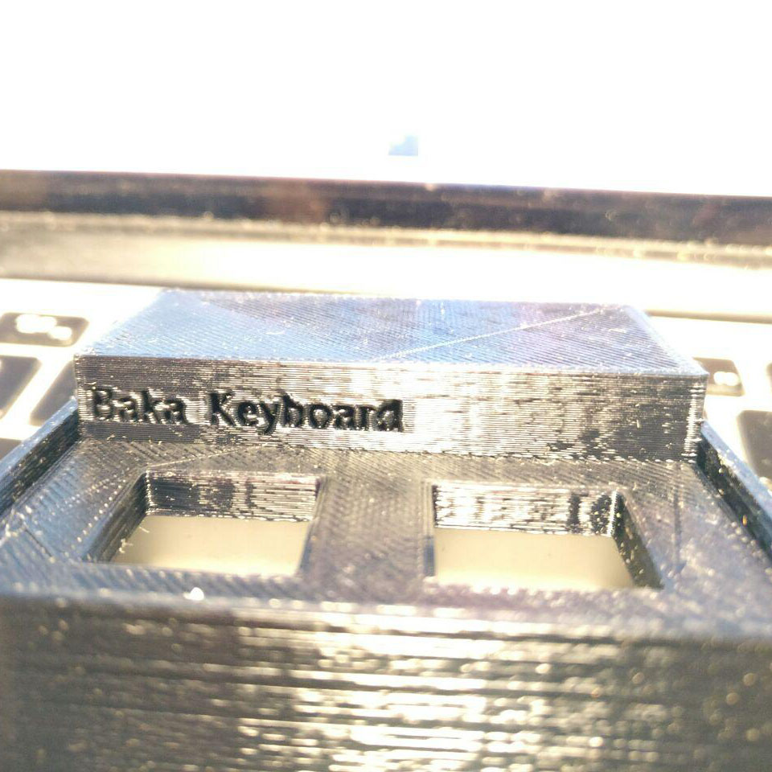
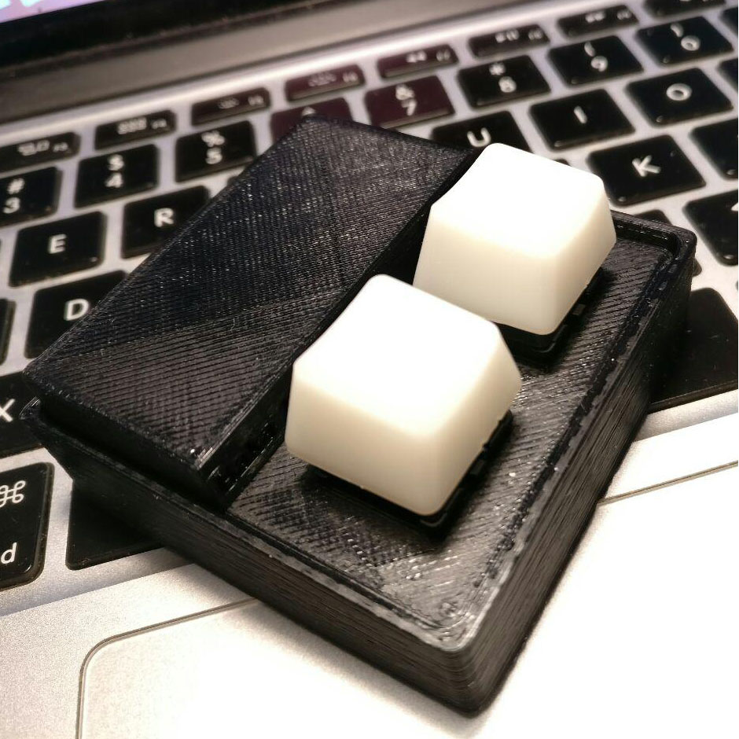

参数
Baka Keyboard 提供 Cherry 原厂青（推荐）/红/黑/绿/奶 轴版进行选择。
主控部分提供 Atmega328P、ATtiny13版本。
外壳提供 3D 打印 PLA 材质黑色、白色外壳,键帽提供乳白色 (ABS)、红色 (PBT) 材质键帽选择。我们推荐黑白，白红配色。
Baka Keyboard 支持全键编程 (真•编程)。
设计
精心设计的外壳，即使在普通的平面上，也可以给你带来极好的使用体验。
用途
Baka Keyboard 可用作 OSU! 辅助，iwanana 辅助，0-1键盘 (也许有人会拿来写代码吧)，系统快速唤醒/休眠，快速屏幕亮度调节，配合 AE/PS 等软件使用等功能。
预留程序烧录接口，控制软件开源且保持更新，把没用做成有卵用。